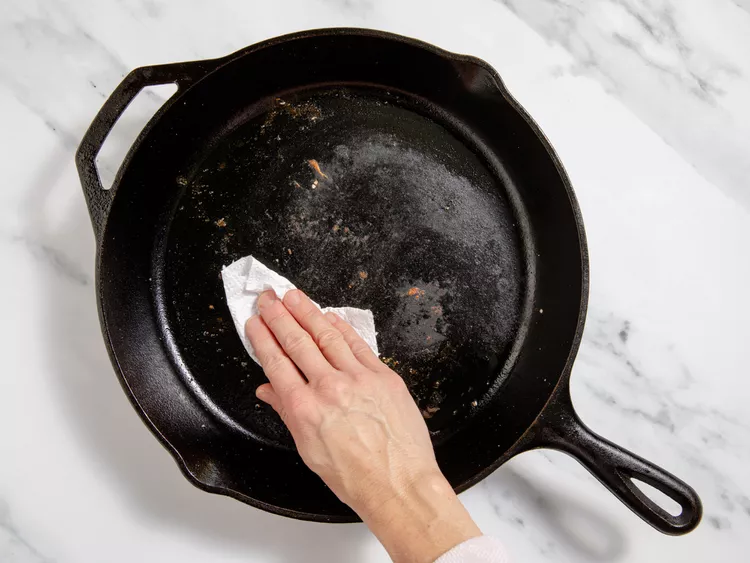
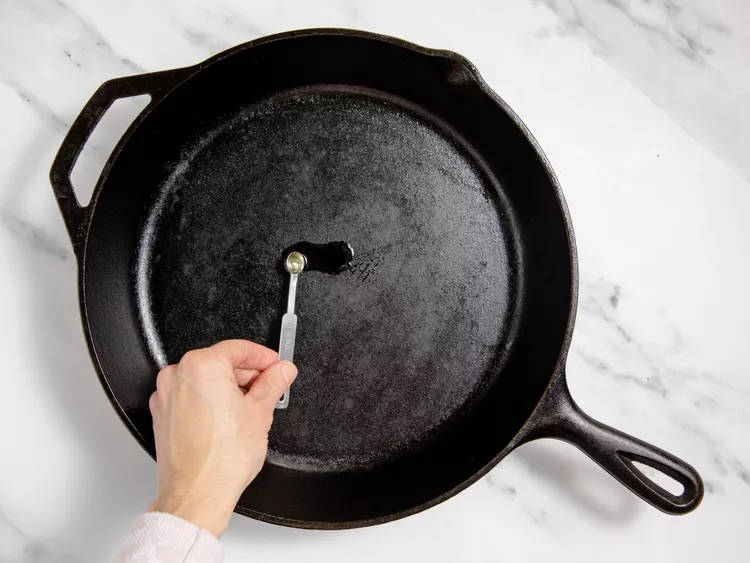

Learn everything you need to know about seasoning — i.e. one of the most crucial elements of a cast iron ownership.
How do you season a cast iron skillet? It's a question that many members of your family or friend group might not be able to answer.
Perhaps it's because, to some, the cast iron skillet feels like an antique tool from the past.
Of course, anyone who's cooked with one knows that cast iron cookware can be among the most valuable tools in your kitchen.
Seasoning is a crucial part of the experience and relationship with your cast iron skillet.
If not done properly or at all, your skillet suffers — and you will too. (Raise your hand if you love it when your food sticks to the pan.)
We sought the experts to help clarify the process and explain why seasoning your cast iron skillet is so important. Find out all you need to know below.
What Does 'Seasoning' Mean When It Comes to Cast Iron?
Seasoning happens in two ways. The first is through regular usage of your cast iron cookware.
Over time, the cooking of food in fat creates a thin, black layer (through a process called oxidation) that becomes "a natural, easy-release cooking surface and helps prevent cast iron cookware from rusting,"
At some point, you may notice that your food is sticking more to your skillet or that the that seasoned, non-stick layer has worn off. When that happens, you can employ the second method for seasoning your skillet. It's a process that mimics what happens when you cook, but without the food. For this version, described in detail below, all you need is your skillet, some oil, and your oven.
What You'll Need:What You'll Need:
A cast-iron skillet
Water
Soap
Vegetable oil, canola oil, or melted shortening
Steel wool (not always needed)
Scrub brush
What to Do:
The steps below are recommended by the experts
Step 1: Remove the Food
You need to start with a clean skillet in order to season it. So if you've just used it, let it cool a bit then rinse in warm water and wipe out any food scraps. (see "Tips" section below)

Step 2: Clean the Skillet
Grab your scrubbing brush and scrub the pan with warm, soapy water.
For tough, stuck-on pieces, use steel wool.
But only remove until the pan surfaces are level with no crusty bits sticking up,
says McManus. Then rinse thoroughly.
Step 3: Dry It
Grab a clean paper towel and pat it until it's completely dry. Don't forget the handle, sides, and the bottom of the skillet.
Step 4: Add Some Oil
Use a clean paper towel to apply a very small amount of neutral cooking oil (such as vegetable, canola, or grapeseed) to the inside and outside of the cookware. Wipe away any excess with a dry paper towel

Step 5: Heat the Skillet
Set the cookware on the top rack of your oven, upside down. Place a large baking sheet or aluminum foil on the bottom rack to catch any drips. Bake at 450-500 degrees F for one hour. Allow to cool in the oven. Remove and store.
And if you're concerned you haven't done it right, McManus says don't worry, "You can't mess it up — it's industrial strength cookware. Anything you don't like the look of, go back in with steel wool and give it a scrub, rinse, heat with oil, and start again."